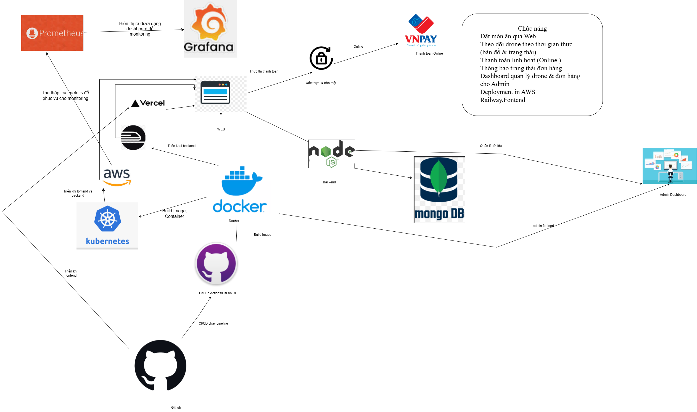
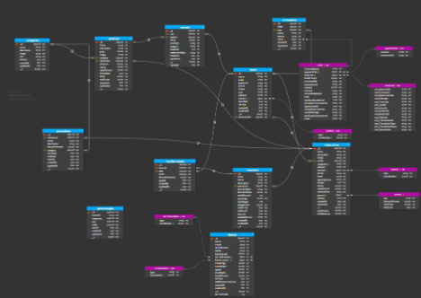

FoodFast Drone Delivery là một hệ thống giao hàng bằng thiết bị bay không người lái (drone) hoàn chỉnh bao gồm 5 ứng dụng con chạy độc lập (monorepo). Nhằm mục tiêu tối ưu hóa vận hành thực tế, hệ thống đã được container hóa hoàn toàn bằng Docker, tích hợp quy trình phát triển và triển khai tự động qua CI/CD GitHub Actions lên đa nền tảng (AWS, Vercel, Railway), kiểm soát hệ thống real-time qua bộ đôi Prometheus + Grafana, và tự động hóa điều phối tài nguyên thông qua Kubernetes (K8s) Auto Scaling & Healing.
1. Video Demo Hệ Thống
Trước khi đi sâu vào chi tiết kiến trúc kỹ thuật và hạ tầng DevOps, hãy cùng theo dõi video demo toàn bộ quy trình đặt hàng, điều hướng drone giao thức ăn real-time trong video dưới đây:
Video 1: Demo các phân hệ ứng dụng và mô phỏng lộ trình bay của Drone giao hàng
2. Kiến Trúc Giải Pháp & Cơ Sở Dữ Liệu
FoodFast được xây dựng dựa trên sự liên kết chặt chẽ của 5 phân hệ dịch vụ:
- Client App (Port 3000): Cho phép khách hàng tìm món ăn, đặt đơn và tracking drone real-time.
- Restaurant App (Port 3001): Nơi các nhà hàng quản lý món ăn và tiếp nhận đơn hàng tức thời.
- Admin App (Port 3002): Cổng quản trị phân quyền cho phép kiểm tra toàn diện hoạt động hệ thống.
- Drone Operations (Port 3003): Bảng điều khiển quản lý đội bay, theo dõi thời lượng pin và vị trí GPS.
- Backend API Server (Port 5000): Engine lõi viết bằng Node.js/Express, kết nối MongoDB và quản lý giao tiếp WebSockets (Socket.io).

Hình 1: Mô hình kiến trúc giải pháp (Solution Alignment) của hệ thống FoodFast
Toàn bộ dữ liệu được quản lý tập trung và mô hình hóa qua cơ sở dữ liệu MongoDB. Sơ đồ thực thể mối quan hệ (ERD) hiển thị cách liên kết chặt chẽ giữa Khách hàng, Đơn hàng, Nhà hàng, Sản phẩm và Drone giao vận:

Hình 2: Sơ đồ thiết kế cơ sở dữ liệu Entity Relationship Diagram (ERD)
2.3 Thiết Kế Multi-Vendor & Quản Lý Nhiều Nhà Hàng
Hệ thống FoodFast áp dụng kiến trúc Multi-Tenant Shared Database để quản lý hàng trăm nhà hàng đồng thời trên cùng một cơ sở hạ tầng mà vẫn bảo đảm tính độc lập dữ liệu:
- Phân tách Menu & Sản phẩm: Mỗi sản phẩm (Item) đều liên kết chặt chẽ với một
restaurantId. Khi truy vấn danh mục món ăn, API gateway tự động routing và áp dụng filter theo ID nhà hàng để tránh rò rỉ dữ liệu chéo. - Điều phối đơn hàng (Order Routing Engine): Khi khách hàng tạo giỏ hàng chứa nhiều món từ một nhà hàng, hệ thống tạo một thực thể đơn hàng (Order) với trường
restaurantIdtương ứng. Ngay lập tức, một tiến trình nền sẽ phát tín hiệu WebSocket dành riêng cho kênh (room) của nhà hàng đó để hiển thị trên màn hình tiếp nhận (Port 3001). - Báo cáo doanh thu biệt lập: Cổng nhà hàng sử dụng các pipeline aggregation của MongoDB để thống kê doanh thu, số đơn hoàn thành, tỷ lệ hủy đơn của riêng nhà hàng mình mà không ảnh hưởng tới hiệu năng tổng thể của cơ sở dữ liệu.
2.4 Cơ Chế Real-Time (Socket.io) & Mô Phỏng Hành Trình Đội Bay Drone
Trọng tâm của tính năng giao hàng công nghệ cao trong FoodFast là sự kết hợp giữa giao thức WebSockets (Socket.io) và bộ mô phỏng tính toán động học (Kinematic Simulator):
- Cấu trúc Room trong Socket.io:
room:restaurant_[id]: Dành riêng cho nhà hàng nhận order mới.room:order_[id]: Kết nối khách hàng, admin và drone tham gia vận chuyển đơn hàng này để cập nhật tọa độ liên tục.room:admin_drones: Cho phép quản trị viên giám sát trạng thái trực quan của tất cả drone trên bản đồ Mapbox.
- Bộ Giả Lập Hành Trình Drone (Drone Physics Simulation Worker):
Khi đơn hàng được xác nhận và drone được chỉ định, một background worker trên backend sẽ khởi chạy luồng giả lập với tần suất cập nhật 1Hz (1 giây một lần):
- Tính toán đường đi: Sử dụng phương pháp nội suy tuyến tính (LERP) và lượng giác để tính toán tọa độ GPS (Latitude, Longitude) di chuyển dọc theo đường chim bay từ Trạm Drone -> Nhà hàng -> Khách hàng.
- Giả lập trạng thái vật lý: Tiêu hao pin động theo tải trọng (khối lượng món ăn), vận tốc gió và khoảng cách di chuyển. Trạng thái nhiệt độ motor và độ cao bay (altitude) cũng được tính toán thời gian thực.
- Phát sóng (Broadcasting): Tọa độ mới nhất sẽ được ghi đè vào Redis cache để giảm tải cho DB chính, đồng thời broadcast qua Socket.io đến client hiển thị bản đồ trượt chuyển động mượt mà.
Giao Diện Thực Tế Các Phân Hệ Ứng Dụng
Để minh chứng cho quy mô hệ thống, dưới đây là toàn bộ giao diện thực tế của 3 ứng dụng chính (Client, Restaurant, Admin) hiển thị dưới dạng slide trình chiếu (lướt qua lại và phóng to xem chi tiết):
3. Đóng Gói Toàn Diện Bằng Docker
Tất cả dịch vụ được đóng gói bằng Docker Multi-stage build giúp giảm dung lượng image tối đa và tăng tính bảo mật. Sử dụng npm ci cùng cờ --ignore-scripts đảm bảo thời gian cài đặt nhanh nhất và tránh chạy các shell script độc hại từ bên thứ ba.
Dưới đây là cấu trúc Dockerfile tối ưu của Backend Service:
# Stage 1: Build dependencies
FROM node:18-alpine AS builder
WORKDIR /app
COPY package*.json ./
RUN npm ci --only=production --ignore-scripts
# Stage 2: Productive runner
FROM node:18-alpine AS runner
WORKDIR /app
COPY --from=builder /app/node_modules ./node_modules
COPY . .
ENV NODE_ENV=production
ENV PORT=5000
HEALTHCHECK --interval=30s --timeout=5s --start-period=5s --retries=3 \
CMD wget --no-verbose --tries=1 --spider http://localhost:5000/api/health || exit 1
EXPOSE 5000
CMD ["node", "server.js"]
Để khởi động môi trường local nhanh chóng, file docker-compose.yml liên kết tất cả 5 service kèm theo cụm monitoring gồm database MongoDB, Prometheus, Grafana, Node Exporter và cAdvisor chỉ bằng một lệnh duy nhất:
docker-compose up -d --build4. Pipeline CI/CD Tự Động & Đa Nền Tảng (AWS, Vercel, Railway)
Quy trình tích hợp và triển khai liên tục được tự động hóa qua GitHub Actions thông qua 3 pipeline chính:
- ci-test.yml: Tự động kích hoạt khi có Pull Request, chạy bộ test Jest của backend, lint code và quét bảo mật mã nguồn bằng Trivy.
- docker-build-push.yml: Build song song 5 service cho cả hai kiến trúc phần cứng (amd64 và arm64), sau đó đẩy trực tiếp lên GitHub Container Registry (ghcr.io).
- deploy-production.yml: Tự động SSH vào máy chủ sản xuất, thực hiện kéo image mới và restart an toàn.
4.1 Đi Sâu Vào Pipeline CI/CD Tiêu Chuẩn Doanh Nghiệp
Quy trình phát hành tự động của FoodFast được thiết kế để loại bỏ hoàn toàn các lỗi thủ công nhờ vào bộ ba GitHub Actions workflows tích hợp sâu:
Mỗi khi lập trình viên thực hiện git push hoặc mở Pull Request trên các nhánh chính, workflow ci-test.yml sẽ được kích hoạt:
- Khởi tạo NodeJS environment, cache lại thư mục
node_modulesquaactions/cachegiúp tăng tốc độ build lên 200%. - Chạy công cụ Static Application Security Testing (SAST) sử dụng Trivy CLI để quét mã nguồn tìm kiếm các key bị rò rỉ (Secrets Leak) và các lỗ hổng thư viện NPM (CVEs).
- Thực thi bộ unit test viết bằng Jest và chạy ESLint để kiểm tra syntax code chuẩn chỉ trước khi merge.
Khi code được merge vào nhánh main, GitHub runner sẽ tiến hành đóng gói Docker image thông qua workflow docker-build-push.yml:
- Sử dụng QEMU và Docker Buildx để đóng gói image đồng thời cho 2 kiến trúc CPU thông dụng:
linux/amd64(dành cho server x86 truyền thống) vàlinux/arm64(tương thích máy chủ Apple Silicon M1/M2/M3 hoặc AWS Graviton tiết kiệm chi phí). - Đẩy Docker images có tag định dạng SHA-commit và tag
latestlên GitHub Container Registry (ghcr.io).
Khi Docker images đã sẵn sàng trên registry, workflow deploy-production.yml tiến hành cập nhật máy chủ sản xuất:
- Mở kết nối SSH bảo mật bằng SSH Private Key (được mã hóa trong GitHub Secrets) đến VPS/EC2.
- Gửi tệp cấu hình biến môi trường an toàn và chạy lệnh reload Docker Compose. Hệ thống kéo các image mới từ
ghcr.iovề, khởi động các container mới song song và hoán đổi port chạy mượt mà mà không gây gián đoạn dịch vụ của người dùng cuối.
Nhằm tăng tính linh hoạt và giảm chi phí hạ tầng, FoodFast hỗ trợ triển khai linh hoạt qua 3 cách thức:
- Deploy Tri-Platform (Hybrid): Phân tách 3 ứng dụng frontend (Client, Restaurant, Admin) lên Vercel để tối ưu tốc độ tải trang CDN tĩnh. Backend NodeJS deploy lên Railway kết nối Cloud MongoDB Database.
- Triển khai Kubernetes (AWS EKS): Phù hợp cho môi trường Production lớn, phân phối lưu lượng tải đều qua Ingress Controller và load balancer của AWS.
- Docker Compose On-Premise: Khởi chạy toàn bộ hệ thống ngay trên máy chủ ảo (AWS EC2 hoặc VM cá nhân) đơn giản chỉ với tệp env config.
5. Hệ Thống Giám Sát Real-time (Prometheus + Grafana)
Để bảo đảm hệ thống vận hành trơn tru, bộ công cụ giám sát được tích hợp sâu vào mã nguồn:
- Prometheus Scraper: Định kỳ kéo dữ liệu từ endpoint
/metrics(sử dụng thư việnprom-clientcủa Express) kết hợp với các chỉ số hệ điều hành từ Node Exporter và chỉ số container từ cAdvisor. - Grafana Visuals: Trực quan hóa dữ liệu hiệu năng (Request Rate, P95 Latency, Network I/O) cùng các chỉ số business đặc thù như: số đơn hàng đang xử lý (Active Orders), lượng drone sẵn sàng (Available Drones) và trạng thái pin.
# prometheus.yml config excerpt
scrape_configs:
- job_name: 'foodfast-api'
scrape_interval: 5s
static_configs:
- targets: ['server_app:5000']
- job_name: 'cadvisor'
static_configs:
- targets: ['cadvisor:8080']Hệ thống cảnh báo (Alertmanager) được cấu hình tự động gửi thông báo khi phát hiện các bất thường: dịch vụ chết đột ngột (ServiceDown), CPU vượt ngưỡng 80% liên tục, thời gian phản hồi API quá 1 giây (HighAPILatency) hoặc số lượng drone khả dụng xuống mức báo động (< 5).
6. Điều Phối K8s: Auto Scaling & Auto Healing
Khi dịch vụ được triển khai trên Kubernetes, tính năng tự động co giãn và tự chữa lành giúp duy trì sự ổn định tuyệt đối:
Tự Động Co Giãn (Auto Scaling với HPA)
Sử dụng Horizontal Pod Autoscaler (HPA) để tự động điều chỉnh số lượng bản sao (replicas) của client và server từ 1 đến 3 pods. Ngưỡng kích hoạt co giãn được cấu hình cực kỳ nhạy bén (CPU utilization > 20% hoặc Memory utilization > 70%) nhằm phản ứng tức thì trước các làn sóng request tải cao đột biến:
apiVersion: autoscaling/v2
kind: HorizontalPodAutoscaler
metadata:
name: foodfast-server-hpa
namespace: foodfast
spec:
scaleTargetRef:
apiVersion: apps/v1
kind: Deployment
name: foodfast-server
minReplicas: 1
maxReplicas: 3
metrics:
- type: Resource
resource:
name: cpu
target:
type: Utilization
averageUtilization: 20Tự Chữa Lành (Auto Healing với Probes)
Mỗi pod server được định cấu hình Liveness Probe và Readiness Probe liên tục ping tới router kiểm tra sức khỏe /api/health. Nếu máy chủ bị treo do rò rỉ bộ nhớ (OOM) hoặc nghẽn thread khiến probe thất bại quá 3 lần liên tiếp, Kubernetes sẽ tự động hủy container lỗi và khởi tạo một container sạch thay thế ngay lập tức.
Để kiểm tra khả năng co giãn thực tế, chúng tôi đã chạy tập lệnh stress test run-autoscaling-demo.sh, liên tục tạo tải giả lập truy cập và ép CPU của server pod chạy vòng lặp vô hạn. HPA đã ngay lập tức ghi nhận CPU tăng vọt từ 5% lên 90% và lập tức kích hoạt cơ chế Scale Up tăng từ 1 pod lên 3 pods trong chưa đầy 15 giây, chia đều tải truy cập và bảo vệ hệ thống khỏi sập đổ.
7. Kết Luận & Bài Học Kinh Nghiệm
Dự án FoodFast không chỉ là một ứng dụng giao hàng drone đơn thuần, mà là một bức tranh toàn cảnh về cách áp dụng các triết lý DevOps hiện đại vào môi trường microservices thực tế. Quá trình thiết kế hạ tầng này mang lại nhiều bài học giá trị:
- Tối ưu hóa tài nguyên container: Dockerfile đa tầng cùng cấu hình giới hạn (resource limits/requests) trên K8s ngăn chặn việc tranh chấp tài nguyên gây sập dây chuyền.
- Tầm quan trọng của quan sát (Observability): Việc theo dõi các metrics kinh doanh song song với tài nguyên phần cứng trên Grafana giúp chủ động dự đoán lưu lượng tải thay vì phản ứng bị động.
- Chiến lược CI/CD linh hoạt: Khả năng triển khai linh hoạt (từ docker-compose local, hybrid cloud đến Kubernetes production) giúp đẩy nhanh tốc độ kiểm thử và bàn giao sản phẩm.
8. Tài Liệu Tham Khảo
Các tài liệu chính thức được dùng để đối chiếu và hoàn thiện phần triển khai hạ tầng của FoodFast:
FoodFast Drone Delivery is a comprehensive drone-assisted food delivery platform structured as a monorepo consisting of 5 autonomous applications. Built for production-grade robustness and optimal resources operation, the system is fully containerized using Docker, integrated with automated CI/CD pipelines via GitHub Actions targeting multiple deployment modes (AWS, Vercel, Railway), observed in real-time using Prometheus + Grafana, and automatedly orchestrated under Kubernetes (K8s) Auto Scaling & Auto Healing.
1. System Demo Video
Before diving deep into the technical architecture and DevOps configuration, check out the live demo showing customer ordering, real-time drone route planning, and navigation monitoring:
Video 1: Platform modules walkthrough and drone delivery path simulation
2. Solution Architecture & Database Design
FoodFast is composed of five interconnected services working in unison:
- Client App (Port 3000): For customers to browse menus, place orders, and track drone locations.
- Restaurant App (Port 3001): Portal for restaurant owners to manage dishes and receive instant order notifications.
- Admin App (Port 3002): High-level system overview with role-based access control.
- Drone Operations (Port 3003): Dashboard monitoring GPS location, battery levels, and active delivery tasks.
- Backend API Server (Port 5000): Central Node.js/Express application connecting to MongoDB and orchestrating WebSockets (Socket.io).
Figure 1: Solution Alignment architecture of the FoodFast platform
The system data is structured cleanly inside a MongoDB database. The Entity Relationship Diagram (ERD) showcases how users, orders, restaurants, items, and delivery drones interact:
Figure 2: Data model Entity Relationship Diagram (ERD)
2.3 Multi-Vendor Tenant Architecture
FoodFast uses a Multi-Tenant Shared Database structure to handle hundreds of restaurants on the same cluster, while enforcing strict logical separation of tenant data:
- Catalog & Menu Isolation: Every menu item contains a `restaurantId` attribute. The API Gateway applies queries targeting only the respective restaurant ID to prevent cross-tenant data leakage.
- Order Routing Engine: When a customer checks out, the backend creates an Order object flagged with the target `restaurantId`. Immediately, a WebSocket signal broadcasts specifically to that restaurant's private channel (`room:restaurant_[id]`), popping up on their live terminal screen (Port 3001).
- Siloed Revenue Analytics: The restaurant dashboard aggregates metrics using MongoDB aggregation pipelines, querying only their own transaction logs to calculate revenue charts and order statistics without hitting other tenants' data pools.
2.4 Real-time Synchronization (Socket.io) & Drone Simulation Engine
The key highlight of FoodFast's delivery pipeline is the integration of WebSockets (Socket.io) with an active physical simulation worker:
- Socket.io Channel Matrix:
room:restaurant_[id]: Receives immediate notifications when orders are placed.room:order_[id]: Synces the customer, restaurant manager, and delivery drone during transit.room:admin_drones: Streams active GPS locations of the entire fleet to the admin map tower.
- Drone Kinematics & Physics Simulator:
When a drone is dispatched, a dedicated background daemon starts a 1Hz (1 update per second) simulation loop:
- Navigation Mathematics: Computes GPS coordinates (Latitude, Longitude) using linear interpolation (LERP) and Haversine equations along the flight path (Hub -> Restaurant -> Customer).
- Physical Constraints Simulation: Simulates dynamic battery discharge curves based on payload weight (mass of dishes), flight speed, and headwind resistance, alongside motor temperatures.
- Redis Broadcasting: The latest calculated telemetry is saved in Redis for low-latency queries and broadcast to all connected clients via Socket.io for smooth map animations.
Sub-Application UI Demonstrations
To demonstrate the scale of the system, here is a collection of screenshots of the three main frontends (Client, Restaurant, Admin) presented in slides (slide to navigate, click to zoom full-size):
3. Package Everything in Docker
To ensure system predictability across environments, we utilize **Docker Multi-stage builds** to keep image sizes small while maintaining security. Running npm ci with --ignore-scripts minimizes installation times and mitigates the risk of malicious third-party post-install scripts.
Here is the optimized backend Dockerfile configuration:
# Stage 1: Build dependencies
FROM node:18-alpine AS builder
WORKDIR /app
COPY package*.json ./
RUN npm ci --only=production --ignore-scripts
# Stage 2: Productive runner
FROM node:18-alpine AS runner
WORKDIR /app
COPY --from=builder /app/node_modules ./node_modules
COPY . .
ENV NODE_ENV=production
ENV PORT=5000
HEALTHCHECK --interval=30s --timeout=5s --start-period=5s --retries=3 \
CMD wget --no-verbose --tries=1 --spider http://localhost:5000/api/health || exit 1
EXPOSE 5000
CMD ["node", "server.js"]
For rapid local testing, the root docker-compose.yml coordinates all 5 services alongside the database and monitoring dependencies (MongoDB, Prometheus, Grafana, Node Exporter, cAdvisor) with a single command:
docker-compose up -d --build4. Automated CI/CD & Deployments (AWS, Vercel, Railway)
The CI/CD pipeline, powered by GitHub Actions, is broken down into three specialized workflows:
- ci-test.yml: Triggered on Pull Requests to execute Jest tests, lint configurations, and scan for CVE vulnerabilities using Trivy.
- docker-build-push.yml: Builds parallel multi-arch images (amd64/arm64) and pushes them to GitHub Container Registry (ghcr.io).
- deploy-production.yml: Connects to the host server via SSH to perform a zero-downtime rolling pull and deployment restart.
4.1 Enterprise CI/CD Pipeline Breakdown
FoodFast enforces fully automated, zero-human-intervention deployment flows using a suite of integrated GitHub Actions workflows:
Triggered on Pull Requests or direct commits to dev branches, the ci-test.yml workflow runs:
- Installs Node modules, leveraging
actions/cacheonnode_modulesto slash build times by 2x. - Runs static code analysis and dependency vulnerability testing using Trivy CLI to spot credentials leaks and insecure NPM dependencies.
- Executes Jest unit suites and tests code syntax styling with ESLint before letting developers merge.
Once updates are merged into main, the docker-build-push.yml workflow is initiated:
- Leverages QEMU and Docker Buildx to compile images in parallel for
linux/amd64(standard servers) andlinux/arm64(AWS Graviton and M-series chips). - Pushes tagged container images directly to **GitHub Container Registry (ghcr.io)**.
When new images are pushed, the deploy-production.yml handles updates:
- Opens a secure SSH tunnel to the host virtual machine using public-key credentials stored in GitHub Secrets.
- Pulls the latest images from
ghcr.io, transfers updated configurations, and triggers a rolling container replacement to swap ports without dropping client traffic.
For maximum flexibility, three deployment methods are supported:
- Tri-Platform Hybrid Deploy: Hosts the three static React frontends on Vercel for ultra-fast CDN edge delivery, while deploying the Node Express server onto Railway connected to a cloud-managed MongoDB instance.
- Kubernetes Cluster (AWS EKS): Deploys all services under a production K8s cluster distributed by an AWS ALB Ingress Controller.
- On-Premise Docker Compose: Runs the entire microservice ecosystem on a single VM (like AWS EC2) with full environment configuration files.
5. Real-time Monitoring & Observability (Prometheus + Grafana)
To keep tabs on the system's operational health, we configured an intensive observability stack:
- Prometheus Scraper: Pulls application metrics from the API endpoint
/metrics(instrumented withprom-client), combined with server metrics from Node Exporter and Docker resource stats from cAdvisor. - Grafana Dashboard: Visualizes network bandwidth, request latency percentiles, memory consumption, alongside custom business metrics (Active Orders count, Drone states, and battery charts).
# prometheus.yml config excerpt
scrape_configs:
- job_name: 'foodfast-api'
scrape_interval: 5s
static_configs:
- targets: ['server_app:5000']
- job_name: 'cadvisor'
static_configs:
- targets: ['cadvisor:8080']Alertmanager rules are set up to trigger notifications for system anomalies: container health failures (ServiceDown), high average latencies (>1s), excessive HTTP errors (>5%), or critically low available drones (<5).
6. Kubernetes Orchestration: Auto Scaling & Auto Healing
When deployed under Kubernetes, the system handles fluctuations in traffic and faults automatically:
Horizontal Pod Autoscaler (HPA)
An HPA controller dynamically scales server and client pod replicas (between 1 and 3) based on CPU (>20%) and Memory (>70%) consumption targets, allowing the system to react instantly to request surges:
apiVersion: autoscaling/v2
kind: HorizontalPodAutoscaler
metadata:
name: foodfast-server-hpa
namespace: foodfast
spec:
scaleTargetRef:
apiVersion: apps/v1
kind: Deployment
name: foodfast-server
minReplicas: 1
maxReplicas: 3
metrics:
- type: Resource
resource:
name: cpu
target:
type: Utilization
averageUtilization: 20Auto Healing
Liveness and Readiness probes are attached to the API deployment, pointing to the Express /api/health endpoint. If a container hangs (e.g., due to an out-of-memory leak or database blocking), the liveness probe fails 3 times, prompting Kubernetes to automatically terminate the unhealthy pod and spawn a new one.
Using our automated load-generation script run-autoscaling-demo.sh, we simulated high traffic and injected an infinite loop execution into the server pods. The HPA quickly detected CPU usage rising to 90%, scaling up replicas from 1 to 3 in less than 15 seconds, successfully distributing the requests and keeping the application online.
7. Summary & Takeaways
FoodFast serves as a practical, production-level case study on applying modern DevOps patterns to a real-world microservices architecture. Key engineering takeaways include:
- Container Optimization: Multi-stage Docker files and Kubernetes resource limits prevent resource starvation and cascade failures.
- Observability is Key: Correlating system health metrics (like CPU and network) with business metrics (such as active orders) yields actionable insights for scaling.
- Flexible Deployment Pipelines: Supporting local docker-compose, hybrid platforms, and full Kubernetes deployments ensures development speed without sacrificing production stability.
8. References
Official documentation used to validate the infrastructure and deployment approach in FoodFast: